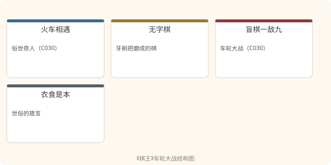

棋王
一、基本信息
| 作者 | 阿城 |
|---|---|
| 成书/出版 | 1984年刊于《上海文学》第7期（中国作家网 C030） 泛文学及其当代接受问题——重勘阿城《棋王》（中国作家网）（官方文学机构） |
| 国别/地区 | 中国 |
| 时代 | 现当代 · 当代 |
| 体裁 | 中篇小说 |
| 语言 | 汉语（白话·话本变奏） |

《棋王》车轮大战结构图（主题·结构图）
二、创作背景
中国作家网（C030）：'1984年第7期《上海文学》所发表的初版本《棋王》'；曾被《北京文学》以'写了知青生活的阴暗面'为由退稿；发表后'在文化热和迅速迭代更新的文学浪潮中被逐渐经典化'、'作为寻根文学的代表作之一进入到文学史叙述之中'。
文体（C030 转述）：阿城自述'语言样貌无非是话本变奏'，细节'暗取《老残游记》和《儒林外史》'，意象取《史记》与张岱笔记。
三、内容脉络
知青时代的'棋呆子'王一生：'俗世奇人'——火车奇遇、地区赛、'下盲棋以一敌九'的'车轮大战'（C030）。
母亲用捡来的牙刷把磨成一副无字棋——'全篇中最为动人心魄的片段'（C030）。
'不做俗人，哪儿会知道这般乐趣？'、'衣食是本'（C030 引文）。
四、主要人物表
| 人物 | 身份 | 说明 |
|---|---|---|
| 王一生 | 棋呆子 | 知青棋痴（C030） |
| 我 | 叙述者 | 同车知青 |
五、主题与艺术特点
- 艰难时世中对于自我的守持（C030）。
- 世俗与超脱的辩证：'衣食是本'（C030）。
- 寻根：传统文化资源的当代激活（C030：寻根文学代表作）。
六、影响与评论
- 中国作家网：'作为寻根文学的代表作之一进入到文学史叙述之中'（C030）。
泛文学及其当代接受问题——重勘阿城《棋王》（中国作家网）（官方文学机构） - 中国作家网：与吴趼人笔法对勘——阿城'在描述中夹杂了心理活动的议论，有着同情的悲悯'（C030）。
泛文学及其当代接受问题——重勘阿城《棋王》（中国作家网）（官方文学机构）
七、阅读建议
难点
- 话本式白话的节奏。
- 象棋文化与'吃'的世俗描写。
- 《棋王》（作家出版社1985年11月说——通说待核）。
与《树王》《孩子王》合读（'三王'）。
八、待核实
- 1985年11月作家出版社单行本说待核。
- '三王'总名出处待核。
- 阿城生年与本名核对。
本页主要来源
阿城的其他收录作品：棋王